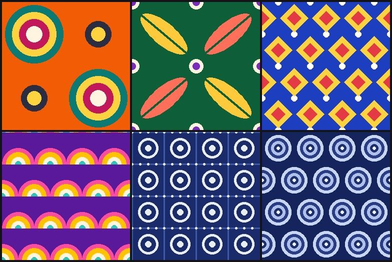
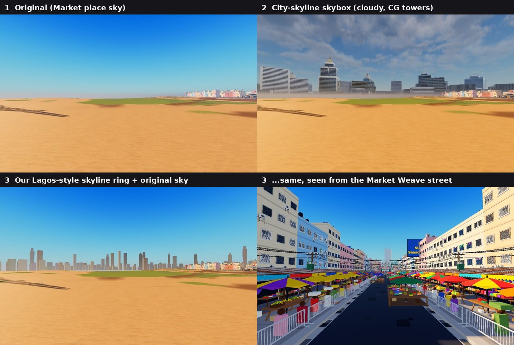
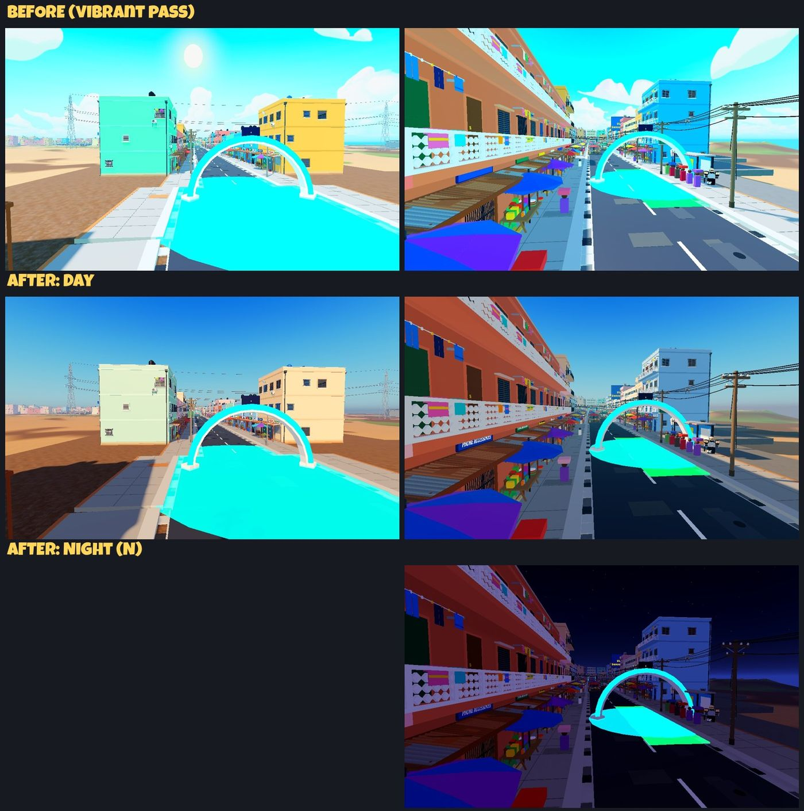

<title>Get It There! VFX Reel</title>
<meta name="claude:viewport-fit-sides" content="cover">
<link rel="stylesheet" href="https://fonts.googleapis.com/css2?family=Bungee&family=Bricolage+Grotesque:opsz,wght@12..96,400;12..96,600;12..96,800&family=JetBrains+Mono:wght@400;600&display=swap">
<style>
/* Layout: one dark "night market" page; a sticky chip nav, then effect cards in a 2-col grid, then reference sections. */
:root{
  --bg:#14151a; --panel:#1d1f27; --panel2:#252833; --line:#343846;
  --ink:#f4efe3; --mut:#a5a8b6; --danfo:#f6b800; --cyan:#00d6f2; --magenta:#ff3dcb; --laterite:#d07a45; --ok:#5ee08a;
  --display:"Bungee", "Arial Black", Impact, sans-serif;
  --body:"Bricolage Grotesque", "Segoe UI", system-ui, sans-serif;
  --mono:"JetBrains Mono", ui-monospace, Consolas, monospace;
  color-scheme: dark;
}
*{box-sizing:border-box}
body{margin:0;background:var(--bg);color:var(--ink);font:16px/1.5 var(--body)}
body::before{content:"";position:fixed;inset:0 0 auto;height:env(safe-area-inset-top,0px);z-index:10;background:var(--bg)}
.wrap{max-width:1180px;margin:0 auto;padding-left:max(16px,env(safe-area-inset-left,0px));padding-right:max(16px,env(safe-area-inset-right,0px))}
a{color:var(--danfo)}
/* hero */
.hero{padding-block:40px 24px;border-bottom:4px solid var(--danfo);background:
  repeating-linear-gradient(90deg,var(--danfo) 0 28px,#14151a 28px 56px) bottom/100% 6px no-repeat}
.kicker{font:600 13px var(--mono);letter-spacing:.12em;text-transform:uppercase;color:var(--mut)}
h1{font:400 clamp(34px,6vw,64px)/1 var(--display);margin:10px 0 12px;color:var(--danfo);text-wrap:balance}
.lede{max-width:66ch;color:var(--ink);margin:0 0 18px;font-size:17px}
.facts{display:flex;flex-wrap:wrap;gap:10px;margin:0;padding:0;list-style:none}
.facts li{font:600 13px var(--mono);background:var(--panel);border:1px solid var(--line);border-radius:6px;padding:6px 10px;color:var(--mut)}
.facts b{color:var(--ink)}
/* nav */
nav{position:sticky;top:env(safe-area-inset-top,0px);z-index:5;background:color-mix(in srgb,var(--bg) 92%,transparent);backdrop-filter:blur(6px);border-bottom:1px solid var(--line)}
nav .wrap{display:flex;gap:8px;overflow-x:auto;padding-block:10px}
nav a{flex:none;font:600 13px var(--mono);color:var(--ink);text-decoration:none;padding:6px 10px;border-radius:999px;border:1px solid var(--line)}
nav a:hover,nav a:focus-visible{border-color:var(--danfo);color:var(--danfo);outline:none}
section{padding-block:36px 8px}
h2{font:400 26px/1.1 var(--display);margin:0 0 6px;color:var(--ink)}
h2 span{color:var(--danfo)}
.sub{color:var(--mut);margin:0 0 20px;max-width:70ch}
/* effect cards */
.grid{display:grid;grid-template-columns:repeat(auto-fill,minmax(min(100%,460px),1fr));gap:18px}
.card{background:var(--panel);border:1px solid var(--line);border-radius:10px;overflow:hidden;display:flex;flex-direction:column;min-width:0}
.media{position:relative;background:#000;aspect-ratio:1221/576}
.media video,.media img{width:100%;height:100%;object-fit:cover;display:block}
.tag{position:absolute;left:10px;top:10px;font:600 11px var(--mono);letter-spacing:.06em;text-transform:uppercase;padding:4px 8px;border-radius:4px;background:#000c;color:var(--ink)}
.tag.market{color:var(--danfo)} .tag.mycopy{color:var(--cyan)} .tag.both{color:var(--ok)}
.body{padding:14px 16px 16px;display:flex;flex-direction:column;gap:8px;min-width:0}
.body h3{margin:0;font:800 19px/1.2 var(--body)}
.body p{margin:0;color:var(--mut);font-size:15px}
.meta{font:12px var(--mono);color:var(--mut)}
.tex{display:flex;flex-wrap:wrap;gap:8px;margin-top:4px}
.tex figure{margin:0;width:74px}
.tex img{width:74px;height:74px;object-fit:contain;border-radius:6px;background:repeating-conic-gradient(#2a2d39 0 25%,#323644 0 50%) 0 0/14px 14px}
.tex figcaption{font:10px/1.2 var(--mono);color:var(--mut);word-break:break-all;margin-top:3px}
.pending{display:grid;place-items:center;text-align:center;padding:20px;color:var(--mut);font:600 14px var(--mono);border:2px dashed var(--line);aspect-ratio:1221/576}
/* compare */
.cmp{display:grid;gap:18px}
.row{display:grid;grid-template-columns:minmax(0,1.15fr) minmax(0,1fr);gap:0;background:var(--panel);border:1px solid var(--line);border-radius:10px;overflow:hidden}
.row .media{aspect-ratio:auto;min-height:100%}
.row .media video{object-fit:contain;background:#000}
.verdict{display:inline-block;font:600 12px var(--mono);padding:3px 8px;border-radius:4px;background:var(--panel2)}
.v-keep{color:var(--ok)} .v-rev{color:var(--magenta)} .v-mix{color:var(--danfo)}
.pair{display:grid;grid-template-columns:1fr 1fr;gap:10px;margin-top:4px}
.pair div{background:var(--panel2);border-radius:6px;padding:8px 10px;font-size:14px}
.pair b{display:block;font:600 11px var(--mono);letter-spacing:.06em;text-transform:uppercase;color:var(--mut);margin-bottom:2px}
@media (max-width:760px){.row{grid-template-columns:1fr}.pair{grid-template-columns:1fr}}
/* stills */
.stills{display:grid;grid-template-columns:repeat(auto-fill,minmax(min(100%,270px),1fr));gap:10px}
.stills figure{margin:0;background:var(--panel);border:1px solid var(--line);border-radius:8px;overflow:hidden}
.stills img{width:100%;aspect-ratio:16/9;object-fit:cover;display:block;cursor:zoom-in}
.stills figcaption{font:12px var(--mono);color:var(--mut);padding:6px 8px}
.wide img{width:100%;border-radius:8px;border:1px solid var(--line);display:block}
.wide figure{margin:0 0 18px}
.wide figcaption{font:13px var(--mono);color:var(--mut);margin-top:6px}
.note{background:var(--panel);border-left:4px solid var(--danfo);border-radius:6px;padding:14px 16px;max-width:76ch}
.note code,.mono{font:13px var(--mono);color:var(--ink);word-break:break-all}
footer{padding-block:40px;color:var(--mut);font:13px var(--mono)}
/* lightbox */
dialog{border:0;padding:0;background:transparent;max-width:min(96vw,1500px)}
dialog::backdrop{background:#000d}
dialog img{max-width:100%;max-height:90vh;display:block;border-radius:8px}
:focus-visible{outline:2px solid var(--danfo);outline-offset:2px}
@media (prefers-reduced-motion:reduce){video{display:none}.media::after{content:"Video paused (reduced motion). Use the MP4 link.";position:absolute;inset:0;display:grid;place-items:center;color:var(--mut);font:13px var(--mono)}}
</style>

<header class="hero">
  <div class="wrap">
    <div class="kicker">GAMR Studios · Get It There! · VFX task 123tp5xey34</div>
    <h1>VFX Reel: Market Run</h1>
    <p class="lede">Every vehicle and run effect, captured in-engine from Roblox Studio Play mode (Graphics Quality 21, full danfo with Hazard kit and roof rack). Each loop is a frame-stepped slow-motion replay of a real drive, so what you see is the actual game, slowed down.</p>
    <ul class="facts">
      <li><b>2</b> places: Market (GIT_Veh_Minibus demo) + My Copy</li>
      <li><b>3</b> emitters per bus (+1 cough on the Hazard kit)</li>
      <li>Low / Mid / High quality tiers</li>
      <li>Updated <b>28 Oct 2026</b></li>
    </ul>
  </div>
</header>
<nav aria-label="Sections"><div class="wrap">
  <a href="#driving">Driving FX</a><a href="#run">Run &amp; rewards</a><a href="#chaos">Chaos</a><a href="#compare">Strict vs relaxed</a><a href="#stalls">Stall goods</a><a href="#stills">Stills</a><a href="#sky">Sky &amp; grade</a>
</div></nav>

<main class="wrap">
  <section id="driving"><h2>Driving <span>FX</span></h2><p class="sub">Continuous effects driven by the bus itself: tyres, exhaust and boost. Decoupled from the chassis code, so they work on any GIT_Vehicle.</p><div class="grid" data-group="driving"></div></section>
  <section id="run"><h2>Run &amp; <span>rewards</span></h2><p class="sub">One-off bursts tied to the run: gates, airtime, crashes, respawns and the finish. Popups stay on the side lanes, never over the road ahead.</p><div class="grid" data-group="run"></div></section>
  <section id="chaos"><h2>Road <span>chaos</span></h2><p class="sub">My Copy only. Nothing on the road stops the bus: stalls fly apart, crates get kicked, kekes slide aside, and everything tidies back after 10 s.</p><div class="grid" data-group="chaos"></div></section>

  <section id="compare"><h2>Strict <span>vs</span> relaxed</h2><p class="sub">Where the Art Bible / TDD rule and a looser, more "pro stylised" option pulled in different directions. Same camera, same drive for each pair.</p><div class="cmp" id="cmp"></div></section>

  <section id="stalls"><h2>Stall <span>goods</span></h2><p class="sub">The 7 Market Weave stalls in My Copy now sell folded Ankara and Adire, hanging lengths and jewellery trays instead of random slabs. Fabric prints are our own original tiles.</p>
    <div class="stills" id="goods"></div>
    <div class="wide" style="margin-top:18px"><figure><figcaption>GIT_TEX_Ankara_A–D and Adire_A–B (drawn with tools/draw_fabrics.py)</figcaption></figure></div>
  </section>

  <section id="stills"><h2>Cinematic <span>stills</span></h2><p class="sub">Play mode, Quality 21, no edits afterwards. Click any still to enlarge.</p><div class="stills" id="gallery"></div></section>

  <section id="sky"><h2>Sky &amp; <span>grade</span></h2><p class="sub">My Copy look work. Option 3 (the Lagos skyline ring with the original Market sky) is the one switched on.</p>
    <div class="wide">
      <figure><figcaption>Skybox options: original sky, two skyline variants. Option 3 is live.</figcaption></figure>
      <figure><figcaption>My Copy relight (MyCopyGrade Day/Night): before / after</figcaption></figure>
    </div>
  </section>

  
</main>
<footer class="wrap">Captured with PlayHarness record/replay + GIT_DevTools.Stepper. Source GIFs and MP4s: VFX_Implementation\previews\gif_v2 and video_v2.</footer>
<dialog id="lb"></dialog>

<script>
const T = n => ({src:`${n}.png`, name:n});
const FX = [
 {g:"driving", id:"Boost_Nitro", t:"Nitro boost", p:"both", d:"Hold SHIFT: a flickering violet nitro jet (three toon bands, white-hot core) roars out of the tall exhaust stack and bends back in the wind, with sparks and spits. Violet-to-magenta ribbons trail from the tail lights and aura streaks rush out at the screen edges only. No tint, no blur.", tex:["GIT_UI_SpeedLines_A","GIT_UI_SpeedLines_B"]},
 {g:"driving", id:"Boost_Nitro_Closeup", t:"Nitro flame, close", p:"both", d:"Three camera-facing toon bands (deep violet, violet, white-hot core) curve up out of the stack and bend back in the wind. Length, width and lick re-roll every 45–115 ms with the odd long spit, plus sparks and a flickering violet light, so it never looks uniform.", tex:[]},
 {g:"driving", id:"Drift_Smoke_Skids_Asphalt", t:"Drift smoke + skid marks", p:"both", d:"Toon smoke from each rear contact patch while sliding, plus rubber skid bands laid on the road. Light continuous smoke while driving, more on hard corners and braking.", tex:["GIT_FX_SmokeToon_4x4","GIT_FX_SkidMark"]},
 {g:"driving", id:"Dust_Laterite", t:"Laterite dust", p:"both", d:"On red-earth surfaces the tyres kick a low continuous dust bank that grows larger and fainter behind the bus, up to about half bus height.", tex:["GIT_FX_SkidMark"]},
 {g:"driving", id:"Exhaust_Cough", t:"Exhaust + cough", p:"both", d:"Soft grey exhaust in irregular puffs, plus dark 'cough' bursts from the tall Hazard-kit pipe every few seconds and on every throttle stab.", tex:["GIT_FX_SmokeToon_4x4"]},
 {g:"run", id:"Checkpoint_Gate_Burst", t:"Checkpoint gate", p:"market", d:"Cyan faceted ring in the gate plane, cyan shards and stars, CHECKPOINT and PERFECT popups. Cyan is the reserved route colour.", tex:["GIT_FX_PolyRing_4x4","GIT_FX_Shard_2x2","GIT_FX_Star_2x2"]},
 {g:"run", id:"BigAir_Landing_Slam", t:"BIG AIR landing", p:"market", d:"After more than 0.25 s of airtime: a flat ground ring, puffs and chips on landing, a little camera shake and the BIG AIR popup.", tex:["GIT_FX_PolyRing_4x4","GIT_FX_SmokeToon_4x4","GIT_UI_Burst_Gold"]},
 {g:"run", id:"Impact_Wall_Sparks_OOPS", t:"Wall crash", p:"market", d:"Hard hits only: spark streaks at the contact point, a white flash, puffs, shake and a funny OOPS! (streak lost).", tex:["GIT_FX_Shard_2x2","GIT_FX_Star_2x2","GIT_UI_Burst_Red"]},
 {g:"run", id:"Finish_Delivered_Party_EndCard", t:"Finish: DELIVERED", p:"market", d:"Gate burst and coins, a confetti cannon that rides with the bus for ~3 s, screen confetti down both edges, a big DELIVERED held for 3 s, then the end card with medal, best drift and streak.", tex:["GIT_FX_Confetti_4x4","GIT_FX_Coin_2x2","GIT_UI_Burst_Gold"]},
 {g:"run", id:"Respawn_Aura", t:"Respawn aura", p:"both", d:"Warm-white blink with a gold outline, a halo sweeping up to the roof, a ground ring and sparkles. About 0.9 s, never covers the road.", tex:["GIT_FX_PolyRing_4x4","GIT_FX_Star_2x2"]},
 {g:"run", id:"CloseOne_NearMiss", t:"CLOSE ONE near miss", p:"market", d:"Shaving past anything solid within 3 studs above 35 km/h (walls, poles, parked or moving vehicles) pops CLOSE ONE, a cyan flash on the object and a boost top-up. Crashing or shoving it cancels the reward. Shoving a soft prop doesn't count.", tex:[]},
 {g:"chaos", id:"Stall_Scatter_MarketWeave", t:"Stall smash", p:"mycopy", d:"Plough a Weave stall: fabrics, jewellery, tables and umbrellas fly on a scripted arc with puffs and a knock. The bus keeps its speed and never rides up on the pieces.", tex:["GIT_FX_SmokeToon_4x4"]},
 {g:"chaos", id:"Crates_Scatter_StallAlley", t:"Stall Alley crates", p:"mycopy", d:"Low crates used to slide under the bus. Now any crate it drives over is kicked away with a puff, wood chips and a knock.", tex:["GIT_FX_SmokeToon_4x4","GIT_FX_Shard_2x2"]},
 {g:"chaos", id:"Vehicle_Push_Keke", t:"Keke shove", p:"mycopy", d:"Any lone vehicle on the road (keke, taxi, stray danfo) in your line slides aside; parked groups and the depot/showroom stay solid. Here a keke with a little spin, a puff and sometimes a horn, then returns once you're far away.", tex:[]},
 {g:"chaos", id:"MyCopy_Run_Driving", t:"Full speed through the Weave", p:"mycopy", d:"Full speed (~100 km/h) down the Market Weave: the bus ploughs two stalls (fabric, umbrellas and jewellery fly on a scripted arc and tidy back later), with tyre smoke, the exhaust cough and speed lines. The bus never leaves the road.", tex:[]},
];
const placeTag = p => p==="mycopy"?["mycopy","My Copy"]:p==="market"?["market","Market place"]:["both","Both places"];
for (const f of FX){
  const host=document.querySelector(`[data-group="${f.g}"]`);
  const [cls,lab]=placeTag(f.p);
  const media=f.pending?`<div class="pending">${f.pending}</div>`:
    `<div class="media"><video src="${f.id}.mp4" muted loop playsinline preload="metadata" aria-label="${f.t} loop"></video><span class="tag ${cls}">${lab}</span></div>`;
  const tex=f.tex.length?`<div class="tex">${f.tex.map(n=>`<figure><figcaption>${n}</figcaption></figure>`).join("")}</div>`:"";
  host.insertAdjacentHTML("beforeend",`<article class="card">${media}<div class="body"><h3>${f.t}</h3><p>${f.d}</p>${f.note?`<div class="meta">${f.note}</div>`:""}${tex}</div></article>`);
}
const CMP=[
 {v:"Smoke_Styles_A_vs_B", t:"Tyre smoke style", strict:"A: strict POLYGON faceted puffs (Art Bible: chunky low-poly)", relaxed:"B: soft toon flipbook, Dash-style", verdict:["keep","B chosen"], d:"The faceted puffs read as 3D mesh lumps from the chase cam. Temitope picked B: still chunky and flat-shaded, but it reads as smoke."},
 {v:"Smoke_B_vs_Kenney", t:"Our toon B vs CC0 sprites", strict:"Our own drawn toon sheet", relaxed:"Kenney CC0 smoke sprites", verdict:["keep","Ours kept"], d:"The stock sprites look softer and more generic. Our sheet matches the palette and the flat-shaded world."},
 {v:"Dust_v4_vs_v5_compare", t:"Laterite dust texture", strict:"v5: our faceted DustSoft sheet (tiny shared texture set)", relaxed:"v4: Roblox built-in soft smoke", verdict:["mix","Relaxed v4 chosen"], d:"v5 breaks into a row of separate blobs; v4 merges into one continuous bank. The texture rule was relaxed for dust only."},
 {img:"Boost_On_vs_Released", t:"Boost screen effect", strict:"Art Bible: no blur, no DOF, UI-layer speed lines", relaxed:"Tried: violet vignette + colour grade + ignition blur", verdict:["rev","Reverted to strict"], d:"Temitope rejected the purple vignette. What shipped: aura speed streaks only while SHIFT is held (left), gone the moment you let go (right)."},
];
const vc={keep:"v-keep",rev:"v-rev",mix:"v-mix"};
document.getElementById("cmp").innerHTML=CMP.map(c=>`<div class="row"><div class="media">${c.v?`<video src="${c.v}.mp4" muted loop playsinline preload="metadata" aria-label="${c.t}"></video>`:``}</div>
 <div class="body"><h3>${c.t}</h3><span class="verdict ${vc[c.verdict[0]]}">${c.verdict[1]}</span>
 <div class="pair"><div><b>Strict</b>${c.strict}</div><div><b>Relaxed</b>${c.relaxed}</div></div><p>${c.d}</p></div></div>`).join("");
const GOODS=[["goods_01_before_weave_stall","Before: random slabs and bowls"],["goods_03_after_closeup_adire_jewellery","After: Adire piles + jewellery"],["goods_04_after_ankara_stall02","After: Ankara stall"],["goods_05_after_driver_view","Driver view: nothing new over the road"]];
const STILLS=[
 ["final_day_01_market_weave_street","Day · Market Weave street"],["final_day_03_driving_keke_road","Day · driving Keke Road"],["final_day_04_stall_smash_market_weave","Day · stall smash"],["final_day_05_cough_desert_skyline","Day · cough + skyline"],["final_day_06_chaos_with_UI","Day · chaos with HUD"],["final_day_02_keke_road","Day · Keke Road"],
 ["final_night_01_market_weave_street","Night · Market Weave"],["final_night_03_bus_hero_low","Night · bus hero"],["final_night_04_driving_keke_road","Night · Keke Road"],["final_night_05_stall_smash_market_weave","Night · stall smash"],["final_night_02_chaos_with_UI","Night · chaos with HUD"],
 ["env_day_01_rooftop_tanks_keke_road","Day · rooftop tanks"],["env_day_02_lowangle_weave_wires","Day · wires over the Weave"],["env_day_03_shed_alley_entry","Day · alley entry"],["env_day_04_market_gate_from_roof","Day · Market Gate"],["env_day_05_market_run_arch","Day · Market Run arch"],
 ["env_night_01_rooftop_tanks_keke_road","Night · rooftop tanks"],["env_night_02_lowangle_weave_moon","Night · Weave moon"],["env_night_03_market_gate_from_roof","Night · Market Gate"],["env_night_04_market_run_arch","Night · Market Run arch"],["env_night_05_aerial_market_skyline","Night · aerial skyline"]];
const fig=([f,c])=>`<figure><figcaption>${c}</figcaption></figure>`;
document.getElementById("goods").innerHTML=GOODS.map(fig).join("");
document.getElementById("gallery").innerHTML=STILLS.map(fig).join("");
// lightbox
const lb=document.getElementById("lb"), lbi=lb.querySelector("img");
document.addEventListener("click",e=>{const i=e.target.closest(".stills img,.wide img"); if(i){lbi.src=i.src;lbi.alt=i.alt;lb.showModal();} else if(e.target===lb||e.target===lbi){lb.close();}});
document.addEventListener("keydown",e=>{if(e.key==="Enter"&&e.target.matches(".stills img")){e.target.click();}});
// play only visible videos
const io=new IntersectionObserver(es=>es.forEach(en=>{const v=en.target; if(en.isIntersecting){v.play().catch(()=>{});}else v.pause();}),{threshold:.25});
document.querySelectorAll("video").forEach(v=>io.observe(v));
</script>
